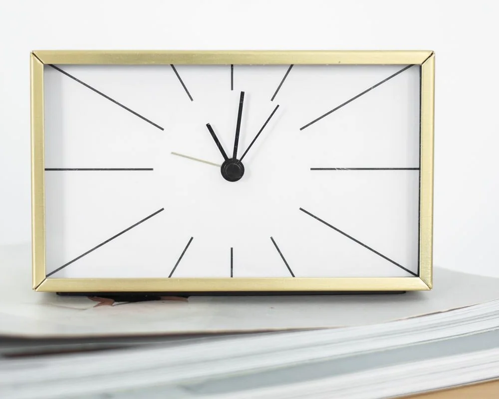
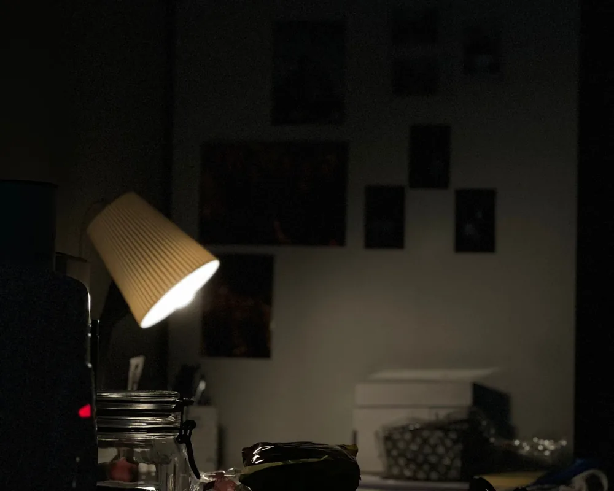
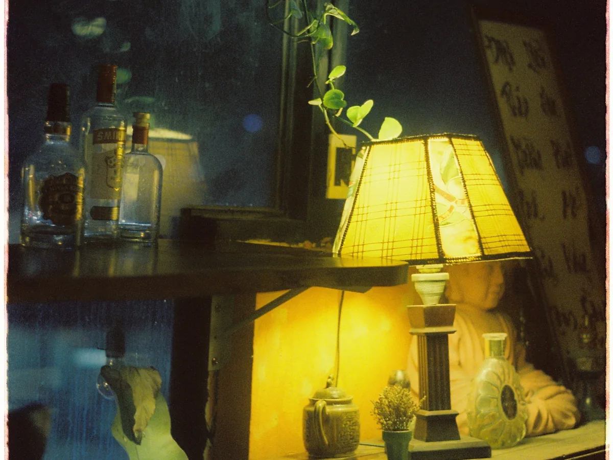
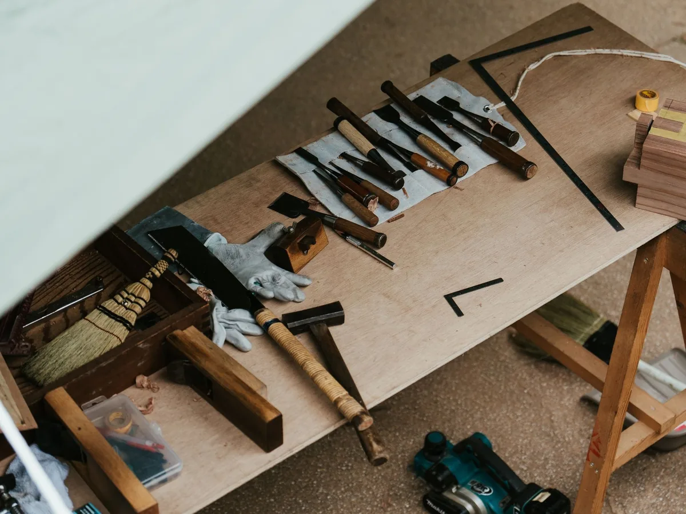

Two hands
An hour hand, a minute hand, and a face you can read from across the room. No second hand, no date window, no glow.
The desk companion
A machined brass dial, two hands, and nothing to check. Signal Nine keeps time quietly on your desk and asks nothing of you — no account, no app, no notifications.
Your local time — Hover or tap to move
01 — The idea
Most desk objects are competing for attention. Signal Nine was designed around the opposite brief: be accurate, be quiet, and be worth looking at twice a day.
One hand moves once a minute. There is no screen to glow at night, no firmware to update, and no companion app to abandon in eighteen months.
02 — The design

An hour hand, a minute hand, and a face you can read from across the room. No second hand, no date window, no glow.
Milled from a single block of brass, brushed and sealed. No seams, no plastic, no sticker pretending to be a badge.

The dial goes dark. There is no standby light, no charging LED and no screen dimming to a glow at 2am.
03 — In the wild


04 — Specifications
Shipped in a paper moulded tray. Two screws, one hex key, and a card with the name of the person who assembled it.
05 — Preorder
The first run is 500 pieces. Reservations are free to cancel until the day it ships, and we will only email you twice: once to confirm, once when it leaves the workshop.